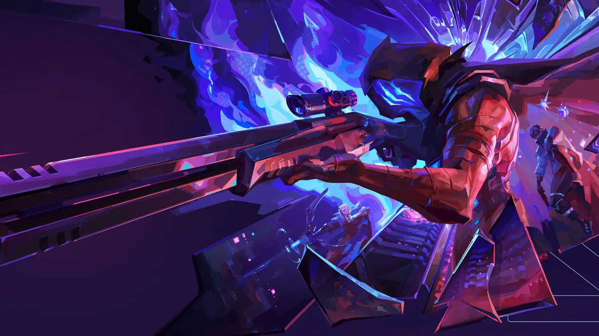
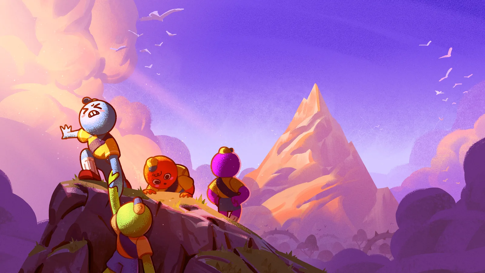

OLYCITY
Tous les outils du Discord au même endroit : stats, musique et soirées jeux.

Tracker
…Rosters, rangs, compos par map et parties en direct.
tracker.olycity.fr
Musique
…Pilote le bot musique du Discord : file d'attente, recherche, playlists.
musique.olycity.fr

Games
BientôtCatalogue des jeux coop, votes et organisation des soirées.
games.olycity.fr